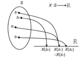
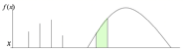
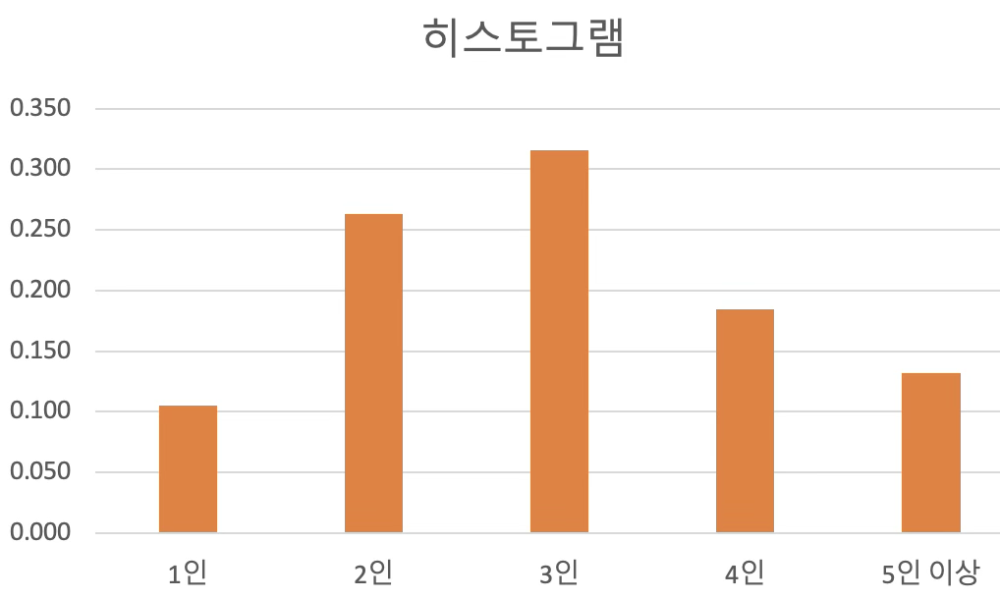
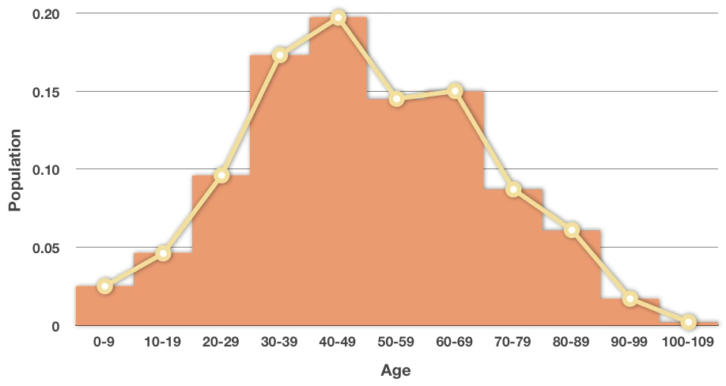
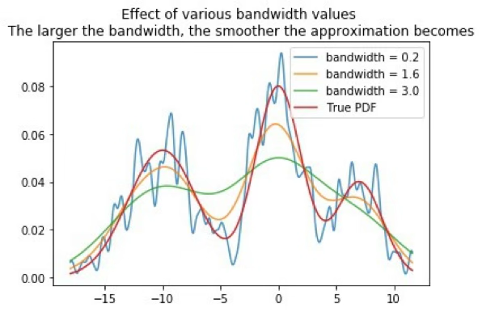
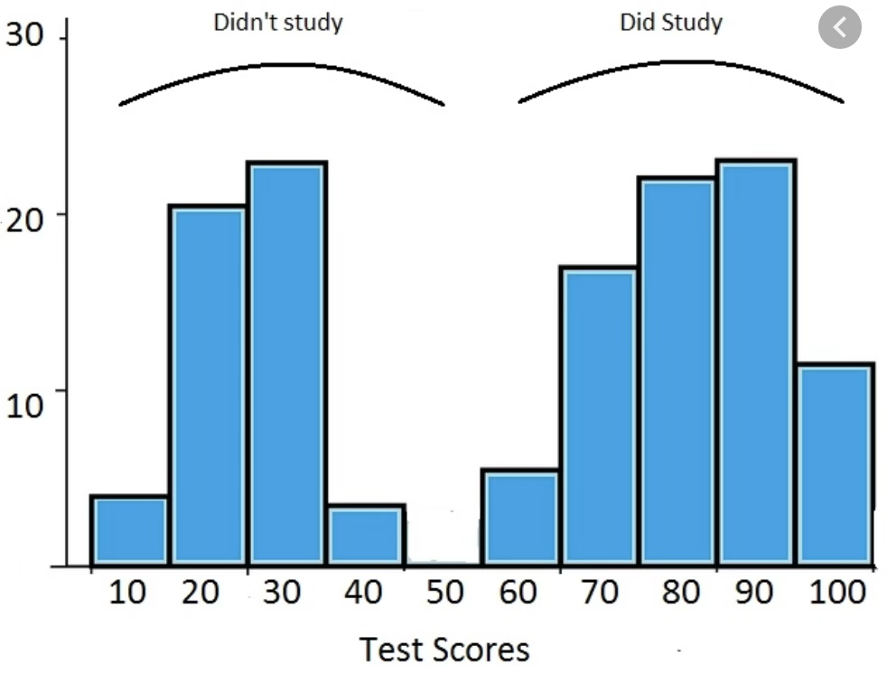
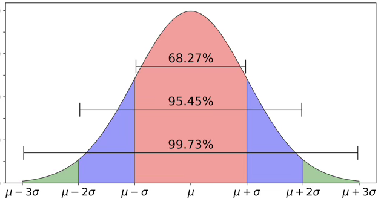

수리 통계 2. 확률변수와 확률분포함수
chapter 1. 확률변수와 확률분포함수
많은 확률 실험에서 원래의 복잡한 표본공간을 직접 다루기보다는, 관심 있는 정보를 요약한 확률변수를 정의하여 문제를 단순화하는 것이 보다 효율적이다.
예를 들어, 하나의 주사위를 10번 던지는 실험을 생각해보자. 이 경우 표본공간은 \(S = \{(x_1, x_2, \ldots, x_{10}) \mid x_i \in \{1,2,3,4,5,6\} \}\) 로 구성되며, 가능한 결과의 수는 총 6^{10}개에 이른다. 각각의 원소는 1부터 6까지의 숫자로 이루어진 길이 10의 순서쌍이므로, 이 방대한 표본공간을 그대로 분석하는 것은 매우 비현실적이다.
그러나 만약 이 실험에서 우리가 관심 갖는 양이 단지 “숫자 6이 나온 횟수”라면, 이 정보를 요약하는 확률변수 X를 다음과 같이 정의할 수 있다. X = 이렇게 정의하면, 확률변수 X는 0부터 10까지의 정수 값을 가질 수 있으며, 그 표본공간은 \(\{0, 1, 2, \ldots, 10\}\) 로 단순화된다.
이처럼 확률변수는 원래의 복잡한 표본공간으로부터 관심 있는 특성만을 추출하여 새로운 공간(보통 실수 집합 또는 이산 집합)으로의 매핑을 형성한다. 이를 통해 문제를 보다 단순하게 구성할 수 있으며, 복잡한 현상에 대한 확률적 분석과 계산이 훨씬 용이해진다.
결국 확률변수의 정의는 복잡한 현실 세계의 정보를 수학적으로 구조화하고 요약하는 핵심적인 도구라 할 수 있다.
1. 확률변수
(1) 확률변수 정의
【확률변수 정의】 확률변수는 표본공간 S에서 실수로의 함수이다.

확률변수란 확률실험의 결과, 즉 표본공간의 원소에 실수 값을 대응시키는 함수이다. 다시 말해, 확률실험에서 관측된 각 결과에 실수 값을 부여하는 규칙을 정의한 것이며, 이를 확률변수(random variable)라고 한다. 보통 확률변수는 X, Y, Z 등의 알파벳 기호로 나타낸다.
예를 들어, 표본공간이 \(S = \{ s_1, s_2, \ldots, s_n \}\) 이고, 각 원소에 대해 확률함수 P가 정의되어 있다고 하자. 이때 확률변수 X는 S의 각 원소에 대해 어떤 실수 값을 대응시키는 함수로 정의된다. 그 결과로 X가 취할 수 있는 값들의 집합, 즉 확률변수의 범위(range)를 \(\mathcal{X} = \{ x_1, x_2, \ldots, x_m \}\) 이라 하자.
이러한 설정 하에서 확률변수 X에 대해 새로운 확률 함수 \(P_X(x_i) = P(X = x_i)\) 를 정의할 수 있다. 이는 표본공간의 원소 중에서 확률변수 X가 x_i 값을 갖는 경우들의 확률을 모두 합산한 값으로 해석된다.
즉, 실험 결과가 \(s_j \in S\) 일 때, \(X(s_j) = x_i\) 이면 우리는 확률변수 X가 값 \(x_i\) 를 관찰한 것으로 간주한다. 이러한 방식으로 복잡한 표본공간을 실수 값 중심의 보다 간결한 구조로 변환하고 분석할 수 있다.
\(P_{X}(X = x_{i}) = P(\{ s_{j} \in S:X(s_{j}) = x_{i}\})\).
【예제】 공정한 동전을 세 번 던질 때 얻는 앞면의 수를 나타내는 확률 변수 \(X\)의 값(범위)을 구해 봅시다.
| 확률실험 | HHH | HHT | HTH | HTT | THH | THT | TTH | TTT |
| 확률변수 X | 3 | 2 | 2 | 1 | 2 | 1 | 1 | 0 |
확률변수 \(X\)의 범위는 \(\mathcal{X} = \{ 0,1,2,3\}\)이다. 표본공간 \(S\)의 모든 8개의 점이 확률 \(\frac{1}{8}\)을 가진다고 가정하면,
| 확률변수 | 0 | 1 | 2 | 3 |
| \[P_{X}(X = x)\] | 1/8 | 3/8 | 3/8 | 1/8 |
(2) 확률변수 종류
확률변수는 확률실험의 결과를 수치로 표현하는 변수로, 불확실한 현상을 수리적으로 분석하기 위한 핵심 개념이다. 이러한 확률변수는 바라보는 관점에 따라 다르게 분류될 수 있다.
먼저, 수리 통계적 관점에서는 확률변수를 크게 두 가지 유형으로 나눈다. 하나는 이산형 확률변수로, 주사위의 눈처럼 셀 수 있는 유한하거나 가산무한한 값을 가지며, 개별적인 결과들이 명확히 구분된다. 다른 하나는 연속형 확률변수로, 키나 체온처럼 어떤 구간 내에서 무한히 많은 실수 값을 가질 수 있는 변수를 말한다.
반면, 데이터 분석의 관점에서는 확률변수를 정량적 변수와 정성적 변수로 구분한다. 정량적 변수는 숫자로 표현되며 크기 비교나 사칙 연산이 가능한 변수로, 연속형 변수뿐만 아니라 숫자 값을 갖는 이산형 변수도 포함된다. 정성적 변수는 문자나 범주로 나타나는 변수로, 성별, 지역, 혈액형처럼 수치적 연산이 아닌 분류와 구분에 초점을 둔다.
이러한 분류 기준은 서로 다르지만, 통계 분석에서는 유기적으로 연결되어 있다. 예를 들어 수리 통계적으로는 숫자 값을 가지는 변수는 모두 연속형 변수의 분석 범주에 포함되며, 범주형 변수는 일반적으로 이산형 확률변수로 간주된다. 따라서 분석 목적에 따라 확률변수를 어떻게 정의하고 해석할 것인지를 명확히 하는 것이 중요하다.
1. 이산형 확률변수 (Discrete Random Variable)
이산형 확률변수란 가능한 값들의 집합이 유한하거나 셀 수 있는 경우를 의미한다. 이러한 변수는 특정한 고유한 값들만을 취할 수 있으며, 연속적인 값들 사이의 중간값은 존재하지 않는다. 즉, 이산형 변수는 결과가 불연속적(discrete)인 특성을 가진다.
이산형 확률변수의 핵심 특징은 다음과 같다.
- 셀 수 있는 값만 가능하다: 이산형 변수는 개별적인 값들로 이루어진 집합을 가지며, 각 값은 분리되어 있다.
- 유한하거나 가산무한한 경우를 포함한다: 변수의 값이 유한한 경우뿐만 아니라, 이론적으로는 무한하더라도 하나씩 차례로 셀 수 있는 경우(예: 자연수 집합)도 이산형 변수에 해당한다.
이산형 확률변수는 확률질량함수(Probability Mass Function, PMF)를 통해 각 가능한 값에 대해 확률을 정의한다. 대표적인 이산형 분포로는 베르누이(Bernoulli), 이항(Binomial), 포아송(Poisson) 분포 등이 있다.
【유한한 이산형 확률변수】
- 두 개의 주사위를 던졌을 때 눈금의 합: \(\mathcal{X} = \{2, 3, 4, \ldots, 12\}\)
- 한 반 학생들의 성별 (예: 남성=1, 여성=0)
- 한 회사의 월별 결함 발생 횟수 (예: 월별 고장 수 0, 1, 2,… 최대 10건 등)
【무한한 이산형 확률변수】
- 특정 지역의 하루 교통사고 발생 건수: \(\mathcal{X} = \{0, 1, 2, 3, \ldots\}\)
- 대기행렬에서 단위 시간 동안 도착하는 고객 수
- 이메일이나 콜센터로 하루에 들어오는 문의 건수
이산형 확률변수는 개별적인 사건을 다루는 데 적합하며, 실제 문제에서는 횟수, 개수, 성별, 성공/실패 여부 등과 같은 데이터를 수리적으로 다루기 위해 자주 사용된다.
2. 연속형 확률변수 (Continuous Random Variable)
연속형 확률변수는 가능한 값의 범위가 무한히 많은 실수값을 포함하는 확률변수로, 정의된 임의의 구간 내에서 모든 값을 가질 수 있는 것이 특징이다. 즉, 두 값 사이에는 무수히 많은 값들이 존재하며, 측정 단위의 정밀도를 높일수록 더욱 세밀한 값을 구분할 수 있다.
【주요 특성】
- 연속형 확률변수는 임의의 실수 구간 내에서 값을 취할 수 있으므로, 개별적인 특정 값이 아니라 값의 범위에 대해 확률이 정의된다.
- 확률은 확률밀도함수(PDF, Probability Density Function)를 통해 정의되며, 특정 값의 확률은 0이고 구간에 대한 확률은 누적분포함수(CDF)를 통해 계산된다.
- 대표적인 연속형 분포로는 정규분포, 지수분포, 감마분포 등이 있다.
【사례】
- 자동차의 연비(\(km/L\)): 정확한 연비는 소수점 단위의 연속적인 값으로 표현된다.
- 수능 시험 점수: 0에서 100점 사이의 연속적인 실수값으로 나타나며, 일반적으로 정규분포를 가정할 수 있다.
- 항공기의 비행 시간: 실제 비행 시간은 2.31시간, 5.82시간처럼 임의의 실수값을 가질 수 있으므로 연속형 변수로 다룬다.
연속형 확률변수는 측정값, 비율, 시간, 거리, 온도 등 연속적인 양을 나타내는 현상을 수리적으로 모델링할 때 사용되며, 확률 이론과 통계학에서 핵심적인 개념이다.
3. 데이터 분석에서의 확률변수 구분
데이터 분석 관점에서 확률변수는 정량적 변수와 정성적 변수로 구분되며, 이 중 모든 정성적(범주형) 변수는 이산형 확률변수로 간주된다. 이러한 분류는 데이터를 해석하고 분석 방법을 선택하는 데 중요한 기준이 된다.
(1) 정량적(Quantitative) 변수
정량적 변수는 수치적인 값을 가지며 산술 연산이 가능한 변수이다. 이 범주에는 이산형 확률변수와 연속형 확률변수가 모두 포함된다.
- 이산형 예시: 생산량, 자녀 수, 결함 개수
- 연속형 예시: 연봉, 키, 몸무게, 점수, 소득
정량적 변수는 평균, 분산, 표준편차 등 수리 통계적 계산이 가능하며, 시각화나 예측 분석에 자주 활용된다.
(2) 정성적(Qualitative) 변수
정성적 변수는 수치적 의미가 없는 범주(categorical)로 구성된 변수이며, 일반적으로 이산형 확률변수로 분류된다. 정성적 변수는 명목형(nominal)과 순서형(ordinal)으로 다시 나눌 수 있다.
- 명목형 예시: 성별(남/여), 혈액형(A/B/O/AB), 지역, 부서명
- 순서형 예시: 선호도(매우 좋음/보통/나쁨), 고객 만족도(1~5점 척도), 학력 수준
정성적 변수는 수치 연산보다는 범주 간의 구분이나 순서 관계를 중심으로 해석되며, 교차표나 범주형 시각화(막대그래프 등)에서 주로 사용된다.
이처럼 확률변수를 정량적/정성적으로 나누는 분류 방식은 데이터의 속성을 이해하고 분석 도구를 적절히 선택하는 데 핵심적인 역할을 한다.
2. 확률분포함수
(1) 분포함수 정의
무작위 확률변수 X 의 누적분포함수 cumulative distribution function 또는 cdf는 \(F_{X}(x)\)로 나타내며, 다음과 같이 정의된다.
확률변수가 연속형 확률변수라고 불리려면 누적분포함수는 연속 함수이여야 한다. 반면, 확률변수가 이산형 확률변수라고 불리려면 누적분포함수는 계단 함수이어야 한다.
동일 분포 정의
확률변수 X와 Y가 동일한 분포(identically distributed) 를 갖는다고 하려면 임의의 집합 \(A \in \mathcal{B}^{1}\)에 대해 다음이 성립해야 한다. \(P(X \in A) = P(Y \in A)\). 즉, 모든 사건 A에 대해 확률변수 X와 Y가 동일한 확률을 가질 때, 확률변수 X와 Y는 동일한 분포를 따른다고 정의한다.
정리
다음 두 명제는 동치(equivalent) 이다.
확률변수 X와 Y는 동일한 분포 를 갖는다.
모든 \(x\)에 대해 \(F_{X}(x) = F_{Y}(x),\text{for every x}\) 성립한다.
즉, 확률변수 X 와 Y 가 동일한 분포를 갖는다는 것은, 모든 x 에 대해 누적분포함수가 동일하다는 것과 동치이다.
(2) CDF 성질
\(F(x)\)는 비감소 non-deceasing 함수이다. \(x_{1} < x_{2} \leftrightarrow F\left( x_{1} \right) \leq F(x_{2})\)
\(F( - \infty) = 0,F(\infty) = 1\)
이산형 확률변수의 누적확률분포는 계단 함수이다. \(P(X = x) = F(x) - F(x - )\)
연속형 확률변수에서는 누적확률밀도함수의 미분함수가 확률밀도함수이다. \(F'(x) = f(x)\)
3. 확률밀도함수
확률변수 \(X\)와 그 누적분포함수 \(F_{X}\)에 연관된 또 다른 함수가 존재하는데, 이는 확률밀도함수(probability density function, pdf) 또는 확률질량함수(probability mass function, pmf) 라고 불린다. 여기서 pdf 와 pmf 라는 용어는 각각 연속형 및 이산형 확률변수에 적용된다.
(1) 확률질량함수
【PMF 정의】 이산형 확률변수 \(X\)의 확률질량함수는 다음과 같이 정의된다. \(p_{X}(x) = P(X = x),\text{for all}x.\). 즉, \(p_{X}(x)\)는 특정 값 \(x\)에서 확률변수 \(X\)가 그 값을 가질 확률이다.
【예제】 이산형 확률밀도함수: 4면(1, 2, 3, 4) 주사위 2개를 동시에 던져 큰 수를 확률변수 \(X\)라 하자. 확률밀도함수는 다음과 같다.
\(p(x) = P(X = x) = \frac{2x - 1}{16},x = 1,2,3,4\)
| \[x\] | 1 | 2 | 3 | 4 |
|---|---|---|---|---|
| \[p(x)\] | 1/16 | 3/16 | 5/16 | 7/16 |
| \[F(x)\] | 1/16 | 4/16 | 9/16 | 16/16 |
【예제】 이산형 확률밀도함수: 앞면이 나올 확률이 \(p\)인 동전을 던지는 실험을 생각해 보자. ”앞면이 처음 나올 때까지 동전을 몇 번 던졌는지” 를 확률변수 \(X\)로 정의하면 확률질량함수는 \(P(X = x) = (1 - p)^{x - 1}p,x = 1,2,...\)
누적확률밀도함수: \(F_{X}(x) = P(X \leq x) = \overset{x}{\sum_{i = 1}}(1 - p)^{x - 1}p\)이므로 \(F_{X}(x) = 1 - (1 - p)^{x},x = 1,2,3,...\)
(2) 확률밀도함수
【PDF 정의】 연속형 확률변수 \(X\)의 확률밀도함수 \(f_{X}(x)\)는 다음 조건을 만족하는 함수이다. \(F_{X}(x) = \int_{- \infty}^{x}f_{X}(t)dt\text{for all}x\). 즉, 누적분포함수 \(F_{X}(x)\)는 확률밀도함수 \(f_{X}(x)\)의 적분으로 정의된다.. \(\frac{d}{dx}F_{X}(x) = f_{X}(x)\)이다.
(3) 확률계산
- 이산형: \(P(X = x) = f_{X}(x) = F_{X}(x) - F_{X}(x^{-})\), 여기서 \(F_{X}(x^{-})\)는 \(x\)직전의 누적확률 값이다.

- 연속형: \(P(a < X < b) = F_{X}(b) - F_{X}(a),\text{a<x<b}\)..

(4) 확률밀도함수 관련 정리
【정리】 함수 \(f_{X}(x),p_{X}(x)\)가 확률변수 \(X\)의 확률밀도함수 또는 확률질량함수가 되기 위한 필요충분조건은 다음과 같다.
\(f_{X}(x) \geq 0\text{for all x}\) / \(p_{X}(x) \geq 0\text{for all x}\)
\(\int_{- \infty}^{\infty}f_{X}(x)dx = 1\) / \(\sum_{x}f_{X}(x) = 1\)
chapter 2. 데이터 확률밀도함수
데이터로부터 확률밀도함수를 추정하는 데 사용되는 대표적인 방법으로는 히스토그램(histogram)과 커널 밀도 추정(kernel density estimator, KDE)이 있다.
- 히스토그램은 데이터를 구간으로 나누고 각 구간에 속한 데이터의 개수를 세어 상대도수 형태로 표현하는 방법으로, 확률밀도의 초기적 형태를 시각화하는 데 유용하다.
- 커널 밀도 추정은 각 데이터 지점에 부드러운 커널 함수를 적용하여 전체 분포를 매끄럽게 추정하는 방법으로, 연속적인 확률밀도함수의 형태를 보다 정교하게 표현할 수 있다.
이 두 방법은 실제 관측 데이터를 바탕으로 모수적 가정을 하지 않고(비모수적 방법), 데이터의 분포 형태를 직관적으로 파악하고 분석하는 데 널리 활용된다.
1. 확률모형
확률모형이란 확률변수의 확률밀도함수 또는 확률질량함수를 의미한다. 이 모형은 확률변수가 어떻게 분포하는지를 수리적으로 표현해주며, 이산형과 연속형의 경우 해석 방식에 차이가 있다.
- 이산형 확률모형에서는 막대그래프 형태로 표현되며, 각 막대의 높이가 해당 값이 나올 확률을 나타낸다. 히스토그램과 유사하게 보일 수 있지만, 확률질량함수는 각 이산적인 값에 대해 정확한 확률을 정의한다.
- 연속형 확률모형에서는 확률밀도함수의 곡선 아래 면적이 확률을 나타낸다. 이때, 특정한 값 하나에서의 확률은 면적이 0이므로 \(P(X = x) = 0\) 이다. 대신, 확률은 구간에 대해 정의되며, 예를 들어 P(a X b)는 곡선 아래 a부터 b까지의 면적으로 해석된다.
따라서 연속형 확률분포에서는 개별 값보다는 구간 단위의 확률 해석이 핵심이 되며, 이는 이산형과의 가장 큰 차이점 중 하나이다.

모집단 확률분포함수 \(f(x)\) 가정
모집단 전체를 전수 조사한 경우, 해당 자료로부터 그린 히스토그램은 모집단의 실제 확률분포함수를 시각적으로 표현한 것이라고 볼 수 있다. 그러나 현실에서 다루는 대부분의 연속형 데이터는 모집단이 따르는 정확한 함수 형태를 알 수 없기 때문에, 통계 분석에서는 모집단의 확률분포를 이론적으로 가정한 뒤 이를 바탕으로 통계량의 분포, 즉 샘플링 분포를 구하여 분석을 수행한다.
이러한 이론적 분포는 단지 분석 도구로서만 사용되는 것이 아니라, 모집단과 유사한 특성을 지닌 데이터를 시뮬레이션을 통해 생성할 때도 활용된다. 즉, 모집단의 확률 구조를 기반으로 가상의 데이터를 생성하여 반복 실험이나 검증에 이용한다.
회귀분석이나 분산분석과 같은 모형 기반 분석에서는 오차항이 어떤 확률분포를 따른다고 가정하는 것이 필수적이다. 일반적으로 오차항이 정규분포를 따른다고 가정하면, 회귀계수에 대한 검정통계량은 t-분포를 따르게 되며, 모형 전체의 유의성을 검정할 때는 F-분포가 사용된다. 이러한 분포 가정은 추론의 타당성을 확보하고, 모형의 설명력을 평가하는 데 핵심적인 역할을 한다.
또한 소표본 상황에서는 확률분포에 대한 가정이 더욱 중요하다. 표본의 크기가 20에서 30 미만일 경우, 모집단이 정규분포를 따른다고 가정하면 표본평균은 t-분포를 따르게 되며, 이를 이용하여 모평균에 대한 가설 검정을 수행할 수 있다. 이와 같이 확률분포에 대한 적절한 가정은 불확실한 모집단 구조를 이론적으로 보완하고, 통계적 추론을 가능하게 해주는 중요한 기반이 된다.
모집단 확률분포함수 가정이 불가능한 경우
모집단의 분포를 사전에 가정하지 않는 경우, 모집단의 확률분포를 직접 알 수는 없다. 그러나 통계적 접근을 통해 표본으로부터 도출한 확률분포를 바탕으로 모집단의 분포를 추정할 수 있다. 이때 사용되는 핵심 개념은, 확률표본의 표본 확률분포가 모집단의 분포를 반영한다는 점이다. 즉, 무작위로 추출된 대표성 있는 표본이 주어진다면, 이 표본에서 도출된 확률분포를 통해 모집단의 분포를 추정할 수 있다.
이러한 추정이 타당한지를 검토하는 방법으로는 다음과 같은 절차가 활용된다.
- 적합성 검정(Goodness-of-fit test)
표본이 특정 분포(예: 정규분포, 이항분포 등)를 따른다고 가정할 수 있는지를 검정하는 방법이다. 대표적으로 카이제곱(χ²) 검정이 사용되며, 교차표 형태로 관측빈도와 기대빈도를 비교하여 유의미한 차이가 있는지를 판단한다.
- 그래프 기반 방법
- P-P plot (Probability-Probability plot): 표본의 누적상대도수와 이론적 누적분포를 비교
- Q-Q plot (Quantile-Quantile plot): 분위수를 비교하여 직선에 가까우면 분포가 유사함을 시사
- 그 외에도 히스토그램이나 커널 밀도 추정 그래프를 통해 대략적인 분포 형태를 확인할 수 있다.
- 경험적 판단 기준 (rule of thumb) 완전한 검정 대신, 자료의 분포 특성을 직관적으로 파악하기 위한 경험적 기준이 사용되기도 한다. 예를 들어, 자료가 좌우 대칭을 띠고 중심이 뚜렷하면 정규분포로 가정할 수 있다는 등의 판단이다.
요약하면, 모집단의 분포를 직접 알 수 없을 때는 표본으로부터 확률분포를 도출하고, 그 분포가 특정 이론적 분포와 얼마나 잘 부합하는지를 검정과 시각화 도구를 통해 판단하게 된다. 이를 통해 통계 분석의 전제가 되는 분포 가정을 정당화하거나 조정할 수 있다.
2. 히스토그램 histogram
(1) 이산형 데이터
이산형 데이터의 히스토그램은 확률변수의 분포를 시각적으로 표현하는 그래프이다. 이때 가로축(x축)은 확률변수가 가질 수 있는 값이며, 세로축(y축)은 각 값에 대응하는 확률을 막대의 높이로 나타낸다. 이러한 그래프를 확률분포함수라고 한다.
예를 들어, 어느 도시의 가구를 대상으로 가구원 수를 조사한 결과를 빈도표로 정리하고, 각 가구원 수에 대한 상대빈도를 계산하면, 이를 이용해 히스토그램을 그릴 수 있다. 이때 상대빈도는 각 값이 나타날 확률을 의미하며, 히스토그램은 확률변수의 분포를 직관적으로 보여주는 도구가 된다.
이산형 데이터의 히스토그램은 막대그래프와 유사한 형태를 가지며, 일반적으로 바차트(bar chart)라고도 불린다. 다만, 확률적 의미를 강조할 경우 이를 확률분포함수의 시각적 표현으로 이해한다.


(2) 연속형 데이터
연속형 데이터의 경우, 데이터를 그대로 나열하거나 개별 값을 기준으로 분석하는 것은 어렵기 때문에, 데이터의 전체 범위를 일정한 폭의 구간으로 나누어 (상대)빈도표를 작성한 후, 이를 바탕으로 히스토그램을 그린다. 각 구간의 상대빈도는 해당 구간에 속한 데이터의 비율을 나타내며, 이를 시각화하면 전체 분포의 형태를 파악할 수 있다.
히스토그램을 구성한 뒤, 각 구간의 중앙값을 기준으로 막대의 꼭짓점을 연결하면 분포의 윤곽을 따라가는 곡선, 즉 폴리곤 형태의 그림이 생성된다. 이 곡선을 통해 전체 데이터의 확률분포 형태를 추정해볼 수 있지만, 이 곡선은 데이터에 따라 달라지며 불연속적이고 매끄럽지 않기 때문에, 이를 바탕으로 정확한 확률분포함수 식을 도출하는 것은 불가능하다.
따라서 실제 분석에서는 연속형 데이터를 이론적으로 잘 설명할 수 있는 정규분포, 지수분포, 감마분포 등의 분포를 가정하고, 관측된 데이터가 이러한 이론적 분포에 얼마나 잘 부합하는지를 검토한다. 이 과정을 적합성 검정이라고 하며, 대표적으로 카이제곱 검정, Q-Q plot 등의 방법이 활용된다. 이를 통해 분석자는 모집단이 특정 분포를 따른다는 가정의 타당성을 평가하고, 필요한 경우 대안을 모색할 수 있다.

연속형 데이터에 대한 히스토그램을 작성하는 과정은 다음과 같다.
데이터를 크기 순으로 정렬한 후, 최소값과 최대값을 구하고 이를 바탕으로 전체 범위(range)를 계산한다. \(\text{범위} = \text{최대값} - \text{최소값}\)
빈(bin) 또는 계급(class)의 개수를 결정한다. 일반적으로 빈의 개수는 8개에서 12개 사이가 적절하며, 데이터 크기에 따라 달라질 수 있다. 빈의 개수를 결정하기 위한 경험적인 기준 중 하나는 Sturges의 규칙으로, 데이터 개수를 N이라 할 때 \(K = 1 + 3.322 \log_{10}(N)\) 와 같이 계산하여 적정한 빈 개수 K를 구할 수 있다.
전체 범위를 빈 개수로 나누어 각 계급 구간의 폭(interval width)을 구한다. 이때 구간 폭은 해석의 편의를 위해 가급적 정수 단위로 조정하는 것이 좋다.
정해진 구간에 따라 데이터를 분할하고, 각 구간에 속하는 도수(빈도)를 계산한다. 이 도수를 전체 관측값의 수로 나누어 상대빈도를 구할 수 있다.
각 구간의 상대빈도 값을 세로축에 대응하여 막대그래프 형태로 표현하면 히스토그램이 완성된다. 이때 각 막대의 중앙값(계급의 중심값)을 점으로 연결하면, 연속형 확률변수의 분포를 나타내는 확률분포함수의 형태를 추정할 수 있다.
이와 같은 과정은 실제 확률분포함수를 알 수 없는 상황에서, 데이터를 바탕으로 분포의 형태를 시각적으로 파악하고 분석하는 데 매우 유용하다.
3. Kernel 추정
유한개의 표본 데이터를 이용하여 모집단의 확률분포함수를 추정할 때, 데이터의 불연속성을 부드럽게 처리하는 평활화 기법(smoothing method)이 사용된다. 이러한 방법은 실제 모집단 분포가 무엇인지 알 수 없을 때, 관측된 데이터를 바탕으로 그 분포를 근사하는 데 활용된다.
신호처리 분야에서는 이러한 방법을 Parzen–Rosenblatt window 방법이라 부르며, 통계학에서는 커널 밀도 추정(Kernel Density Estimator, KDE)이라는 이름으로 널리 알려져 있다.
KDE는 각 관측값에 대해 커널 함수(예: 정규 커널)를 중심으로 확률밀도를 부여하고, 이를 전체적으로 합산하여 스무드한 곡선 형태의 확률밀도함수를 생성한다. 이는 히스토그램이나 히스토그램의 폴리곤처럼 계단 모양이나 뾰족한 꺾임이 있는 형태보다 훨씬 부드럽고 연속적인 분포 형태를 제공한다.
결과적으로 KDE는 히스토그램보다 해상도와 유연성이 높으며, 주어진 데이터의 분포 구조를 더 자연스럽게 반영할 수 있는 장점이 있다. 커널 함수의 선택과 함께 대역폭(bandwidth) 설정이 밀도 추정의 형태와 정밀도에 큰 영향을 미친다.
【커널함수 정의】 커널함수 \(\int_{- \infty}^{\infty}K(x)dx = 1\)는 양의실수 적분가능한 좌우 대칭인 함수이며 Gaussian, Epanechnikov 등이 유명한 커널 함수이다.
가우스 커널 = ’gaussian' : \(K(x;h) \propto e^{\frac{x^{2}}{2h^{2}}}\)
Epanechnikov 커널 = ’epanechnikov' : \(K(x;h) \propto 1 - \frac{x^{2}}{h^{2}}\)
선형 커널 = ’linear' : \(K(x;h) \propto 1 - \frac{x}{h},x < h\)
확률분포함수 \(f(x)\)로 부터 확률표본 데이터 \(x_{1},x_{2},\cdots,x_{n}\)가 주어진 경우 커널추정량은 \({\widehat{f}}_{h}(x) = \frac{1}{n}\overset{n}{\sum_{i = 1}}K_{h}(x - x_{i}) = \frac{1}{nh}\sum K(\frac{x - x_{i}}{h})\)이다. \(K()\)는 커널함수이고 \(h\)는 bandwith 모수이다. \(h\)가 크면 완만한 형태가 되고 작으면 뾰족한 형태이다.
최적 \(h = (\frac{4{\widehat{\sigma}}^{5}}{3n})^{\frac{1}{5}} \approx 1.06\widehat{\sigma}n^{- 0.2}\) 이다.

4. 봉우리
확률분포함수의 경우 발생 확률이 높은 곳을 봉우리라 하고 가장 높은 봉우리가 발생하는 확률변수 값을 최빈값 mode이라 한다. 일반적으로 확률분포함수는 봉우리를 중심으로 좌우로 확률이 작아지는 형태를 갖는다.
확률분포함수에서 발생 확률이 높은 구간은 곡선 위에서 봉우리로 나타나며, 그 중 가장 높은 봉우리에 해당하는 확률변수의 값을 최빈값(mode)이라고 한다. 일반적으로 확률분포함수는 봉우리를 중심으로 양쪽으로 갈수록 확률이 점차 작아지는 형태를 보인다.
봉우리의 개수에 따라 확률분포함수의 형태를 다음과 같이 분류할 수 있다.
- 단봉(unimodal): 봉우리가 하나인 분포. 대부분의 정규분포는 이 유형에 속한다.
- 쌍봉(bimodal): 봉우리가 두 개인 분포. 서로 다른 두 집단이 섞여 있을 때 자주 발생한다.
- 다봉(multimodal): 세 개 이상의 봉우리를 가지는 분포. 여러 이질적인 집단이 혼합된 경우 발생할 수 있다.
봉우리가 2개 이상인 분포는 일반적으로 서로 다른 성격을 가진 하위 집단이 한 데이터셋에 혼재되어 있을 때 나타난다. 예를 들어, 중간고사 점수를 분석할 때, 공부한 학생들과 그렇지 않은 학생들을 함께 조사하면 성적 분포가 두 개의 뚜렷한 봉우리를 가진 쌍봉 형태로 나타날 수 있다. 이와 유사하게 남녀의 몸무게를 함께 측정한 경우에도 평균 체격 차이로 인해 두 개의 봉우리가 나타나는 현상이 관찰된다.
이러한 분포 형태는 단순한 평균이나 분산으로는 설명하기 어려운 구조적 특성을 보여주기 때문에, 데이터를 분해하거나 군집별 분석을 고려해야 할 필요가 있음을 시사한다.
쌍봉 분포의 한계
봉우리가 두 개인 이봉(bimodal) 분포에서는 단순히 평균을 추론하는 방식이 다음과 같은 여러 문제점을 야기할 수 있다.
첫째, 대표성 부족 문제가 발생할 수 있다. 평균은 보통 데이터의 중심 경향을 요약하는 지표로 사용되지만, 이봉 분포에서는 두 개의 봉우리 사이에 위치하게 되며, 실제로는 데이터가 거의 존재하지 않는 구간의 값을 대표값으로 제시할 위험이 있다. 이 경우 평균은 중심 경향을 적절히 반영하지 못한다.
둘째, 왜곡된 해석의 가능성이 크다. 이봉 분포는 일반적으로 서로 다른 두 모집단이 섞여 있을 때 나타나는데, 이 경우 전체 데이터를 대상으로 계산한 단일 평균은 각 모집단의 특성을 반영하지 못하고, 두 집단을 모두 왜곡한 해석을 초래할 수 있다.
셋째, 분산이 증가하는 문제가 있다. 두 개의 중심에서 데이터가 분포되기 때문에 전체 분산이 커지며, 이로 인해 평균에 대한 신뢰구간이 넓어지고 추론의 정확성이 낮아진다.
넷째, 단일 정규분포 가정의 위반이 발생할 수 있다. 많은 평균 비교를 위한 통계적 방법들(예: t-검정, 분산분석)은 정규성을 전제로 하지만, 이봉 분포는 이러한 정규분포 가정을 충족하지 않을 가능성이 높아, 해당 검정의 사용이 부적절해질 수 있다.
다섯째, 혼합 모집단의 가능성이 존재한다. 두 개 이상의 서로 다른 모집단이 하나의 데이터셋으로 결합된 경우라면, 전체 평균을 하나로 제시하기보다는 각 하위 집단의 평균을 개별적으로 추정하고 해석하는 것이 더 적절하다. 단일 평균을 제시하면 오히려 중요한 정보가 손실될 수 있다.
따라서 이봉 분포를 갖는 데이터를 분석할 때는 단순한 평균 추론보다는, 군집 분석, 혼합분포 모형(Gaussian Mixture Model), 또는 중앙값(median)과 같은 대체적인 대표값을 사용하는 것이 보다 타당하며, 데이터의 구조를 반영한 해석이 가능해진다.
5. 치우침
(1) 정의
확률분포함수는 일반적으로 중심에 가까운 값에서 높은 확률을 가지며, 중심에서 멀어질수록 확률이 점차 작아지는 형태를 띤다. 이러한 특성은 자연 현상이나 사회적 현상에서 관찰되는 많은 변수들이 극단적인 값보다는 평균이나 중심값 부근에서 자주 발생하는 경향을 잘 반영한다.
특히 종 모양(bell-shaped)이며 좌우 대칭인 분포는 봉우리를 중심으로 양쪽이 완전히 대칭을 이루는 형태로, 평균, 중앙값, 최빈값이 모두 같은 위치에 존재한다. 이와 같은 분포는 데이터가 한쪽으로 치우치지 않고 균형 있게 분포되어 있음을 의미하며, 대표적으로 정규분포가 이에 해당한다.
반면, 분포가 우측으로 치우친 경우(positive skewed, 또는 right-skewed)는 오른쪽 꼬리가 길게 늘어지는 모양을 보인다. 이는 일부 큰 값들이 전체 분포의 끝부분에 위치함을 나타내며, 이 값들이 평균을 끌어올려 평균이 중앙값보다 크게 된다. 예를 들어 소득, 부동산 가격과 같은 변수는 이런 형태의 분포를 보이는 경우가 많다.
반대로 좌측으로 치우친 분포(negative skewed, 또는 left-skewed)는 왼쪽 꼬리가 길며, 극단적으로 작은 값들이 존재하는 경우이다. 이로 인해 평균이 중앙값보다 작아지는 경향이 나타난다. 예를 들어 시험 점수가 대부분 높은 수준이지만 일부 낮은 점수가 포함된 경우 이런 형태가 관찰될 수 있다.
이처럼 확률분포함수의 형태와 치우침(skewness)은 데이터가 어떻게 퍼져 있는지를 보여주는 중요한 특징으로, 중심 경향을 해석하고 적절한 분석 방법을 선택하는 데 유용한 정보를 제공한다. 분포의 대칭성, 비대칭성 여부는 평균, 중앙값, 최빈값 간의 관계를 통해 파악할 수 있으며, 데이터의 구조와 특성을 이해하는 데 핵심적인 역할을 한다.
(2) 치우침과 중앙 위치 통계량 관계

평균(mean)은 데이터의 크기를 반영하는 중심 척도로, 모든 관측값을 더한 뒤 데이터의 개수로 나눈 값으로 정의된다. 이는 데이터 전체의 절대적인 크기 수준을 대표하며, 분포의 중심이 어디에 위치하는지를 수치적으로 표현해준다. 다만, 극단적으로 크거나 작은 값이 포함될 경우 평균은 그 영향을 크게 받게 된다.
이에 비해 중앙값(median)은 관측값을 크기 순으로 정렬했을 때 정중앙에 위치하는 값이다. 이는 순서에 기반한 중심 척도로서, 이상치나 극단값의 영향을 거의 받지 않는다. 특히 데이터 분포가 비대칭이거나 한쪽으로 치우쳐 있을 때도 안정적으로 중심 경향을 나타낼 수 있어 평균보다 더 적절한 대표값이 될 수 있다.
최빈값(mode)은 전체 데이터 중 가장 자주 나타나는 값으로, 확률분포의 봉우리에 해당한다. 최빈값은 특정 값이 빈번하게 반복되는 패턴을 보여주며, 특히 이산형 데이터나 분포가 다봉(multi-modal)인 경우에 유용한 정보를 제공한다.
이 세 가지 중심 척도는 모두 데이터의 중심 경향을 요약하는 데 사용되며, 분포의 형태에 따라 서로 다른 위치에 나타날 수 있다. 정규분포처럼 좌우 대칭인 경우에는 평균, 중앙값, 최빈값이 모두 같은 값을 가지지만, 우측 또는 좌측으로 치우친 분포에서는 평균이 극단값에 의해 끌려가 중앙값 및 최빈값과 차이를 보이게 된다.
따라서 데이터의 분포 특성과 목적에 따라 적절한 중심 척도를 선택하는 것이 중요하다. 평균은 수치의 크기를 중심으로 한 대표값, 중앙값은 순서의 중심을 나타내는 값, 최빈값은 가장 빈번하게 나타나는 데이터의 특성을 반영하는 값으로 각각의 특성을 고려해 활용해야 한다.
(3) 치우침 척도
평균 기반
- \(\mu_{3} = E\left\lbrack \left( \frac{X - \mu}{\sigma} \right)^{3} \right\rbrack = \frac{\mu_{3}}{\sigma^{3}}\)
좌우 대칭인 정규분포의 왜도는 0이고 지수분포의 왜도 2로, 이는 강한 우측 치우침을 나타냄을 의미한다.
중앙값 기반 척도
Pearson’s First Skewness : \(skew = \frac{\text{mean} - \text{mode}}{\text{std}}\)
Pearson’s Second Skewness : \(skew = \frac{3(\text{mean} - \text{median})}{\text{std}}\)
사분위 기반 Bowley’s Skewness
- skew = \(\frac{(Q_{3} + Q_{1} - 2Q_{2})}{\text{IQR}}\)
중앙값을 중심으로 사분위수 간의 차이를 활용한 왜도 측정 방식. 이상치의 영향을 덜 받는다.
Groeneveld & Meeden’s Coefficient
- \(skew = \frac{\text{mean} - \text{median}}{E(|X - \text{median}|)}\)
평균과 중앙값의 차이를 절대 편차로 정규화한 값으로, 비대칭성을 측정하는 지표이다.
(4) 치우침 판단 기준
| Pearson 2차 | 분포 형태 | Bowley’s | Groeneveld & Meeden’s |
| skew=0 | 대칭 분포 | skew=0 | skew=0 |
| 0 < skew < 0.5 | 거의 대칭 | 0 < skew < 0.25 | 0 < skew < 0.1 |
| 0.5 ≤ skew < 1.0 | 약한 우측 치우침 | 0.25 ≤ skew < 0.5 | 0.1 ≤ skew < 0.3 |
| skew ≥ 1.0 | 강한 우측 치우침 | skew ≥ 0.5 | skew ≥ 0.3 |
| -0.5 < skew < 0 | 약한 좌측 치우침 | -0.25 < skew < 0 | -0.1 < skew < 0 |
| -1.0 < skew ≤ -0.5 | 중간 정도의 좌측 치우침 | -0.5 < skew ≤ -0.25 | -0.3 < skew ≤ -0.1 |
| skew ≤ -1.0 | 강한 좌측 치우침 | skew ≤ -0.5 | skew ≤ -0.3 |
6. 확률밀도함수 관련 법칙
(1) 실증적 법칙 empirical rule
확률변수 \(X\)의 확률밀도함수 형태가 벨모양의 좌우 대칭이고 평균 \(\mu\), 표준편차 \(\sigma\)를 갖는다고 하면 다음이 성립한다.
\(P(|X - \mu| < k\sigma) \geq \alpha\)
\(k = 1\) : 데이터는 평균을 중심으로 \(\pm \sigma\) 구간, \((\mu - \sigma,\mu + \sigma)\)에 적어도 68%(\(\alpha\))가 포함된다.
\(k = 2\) : 데이터는 평균을 중심으로 \(\pm 2\sigma\) 구간, \((\mu - 2\sigma,\mu + 2\sigma)\)에 적어도 95%(\(\alpha\))가 포함된다.
\(k = 3\) : 데이터는 평균을 중심으로 \(\pm 3\sigma\) 구간, \((\mu - 3\sigma,\mu + 3\sigma)\)에 적어도 99.8%(\(\alpha\))가 포함된다.
만약 \(k = 6\) : 100만개 데이터 중 2개만 이 구간을 벗어남. \(6\sigma\) 품질 운동이다.

(2) chebyshev 부등식
평균 \(\mu\), 표준편차 \(\sigma\)을 갖는 확률변수 \(X\)의 확률밀도함수 형태를 알 수 없는 경우 다음이 성립한다.
\[P(|X - \mu| < k\sigma) \geq 1 - \frac{1}{k^{2}}\]
\(k = 2\) : 데이터는 평균을 중심으로 \(\pm 2\sigma\) 구간, \((\mu - 2\sigma,\mu + 2\sigma)\)에 적어도 75%가 포함된다.
\(k = 3\) : 데이터는 평균을 중심으로 \(\pm 3\sigma\) 구간, \((\mu - 3\sigma,\mu + 3\sigma)\)에 적어도 89%가 포함된다.
#데이터 읽기 (연속형 데이터)
import pandas as pd
data=pd.read_csv('https://vincentarelbundock.github.io/Rdatasets/csv/fpp2/ausair.csv')
data.info()(10, 20] 0.361702 (30, 40] 0.148936 (60, 70] 0.127660 (20, 30] 0.106383 (40, 50] 0.106383 (0, 10] 0.085106 (50, 60] 0.042553
#상대빈도표
import numpy as np
pd.cut(data['value'],np.arange(0,80,10)).value_counts()/len(data)#확률밀도함수, KDE
import matplotlib.pyplot as plt
df = pd.DataFrame(data,columns=['value'])
ax = df.plot.hist(bins=10)
df.plot.kde(ax=ax,secondary_y=True,bw_method=0.3)
plt.show()
#CDF, PDF 그리기
import matplotlib.pyplot as plt
fig, ax = plt.subplots()
ax2 = ax.twinx()
n, bins, patches = ax.hist(data['value'], bins=10)
n, bins, patches = ax2.hist(data['value'], cumulative=1, histtype='step', bins=10, color='tab:orange')
plt.show()
chapter 3. 변수변환
모집단의 관심 현상을 누적분포함수를 가진 확률변수 X의 형태로 모델링할 수 있다면, 자연스럽게 X 자체뿐만 아니라 X의 함숫값, 즉 g(X)의 특성에도 관심을 갖게 된다. 예를 들어, 이자율 변화에 따른 수익률, 측정값의 제곱, 또는 로그 변환과 같이 실제 응용에서는 원래의 확률변수 X가 아닌, 그것의 함수 형태인 g(X)가 분석의 대상이 되는 경우가 많다.
따라서 확률변수 X가 어떤 분포를 따를 때, 그 함수 g(X)가 가지는 분포나 평균, 분산, 모멘트 등과 같은 정보를 어떻게 도출할 수 있을지를 체계적으로 다루는 기법들이 필요하다. 여기서는 이러한 목적을 위해 사용되는 확률변수의 함수에 대한 변환법, 기댓값 계산법, 모멘트 생성 함수, 변수 변환을 통한 분포 도출 등의 통계적 기법들을 다루게 된다.
1. 개념
만약 확률변수 \(X\) 의 임의의 함수 \(g(X)\) 또한 확률변수가 된다. 종종 \(g(X)\) 자체도 관심의 대상이 되며 이를 새로운 확률변수 \(Y = g(X)\)로 표기하며, 임의의 집합 \(A\)에 대하여 \(P(Y \in A) = P(g(X) \in A)\)로 나타낼 수 있으며, 이는 \(Y\)의 분포가 함수 \(F_{X}\)와 \(g\)에 의해 결정됨을 의미한다.
\(y = g(x)\)라고 쓸 때 함수 \(g(x)\)는 원래 확률변수 \(X\)의 표본공간 \(\mathcal{X}\) 에서 새로운 표본공간 \(\mathcal{Y}\), 즉 확률변수 \(Y\)의 표본공간으로 가는 매핑을 정의한다. 이를 수식으로 표현하면, \(g(x):\mathcal{X} \rightarrow \mathcal{Y}\). \(g\)에 대해 역함수 매핑 \(g^{- 1}\)을 정의하는데, 이는 \(\mathcal{Y}\)의 부분집합을 \(\mathcal{X}\)의 부분집합으로 변환하는 함수이다. \(g^{- 1}(A) = \{ x \in \mathcal{X}:g(x) \in A\}\).
즉, 사상 \(g^{- 1}\)은 집합을 집합으로 변환하는데, \(g^{- 1}(A)\)는 \(g(x)\)가 집합 \(A\)로 보내는 \(\mathcal{X}\)의 점들의 집합을 의미한다. 집합 \(A\)가 단일 원소 집합, 즉 \(A = \{ y\}\)인 경우도 가능하다. 이때는, \(g^{- 1}(\{ y\}) = \{ x \in \mathcal{X}:g(x) = y\}\) 로 표현된다. 이 경우, 우리는 종종 \(g^{- 1}(y)\)를 \(g^{- 1}(\{ y\})\) 대신 사용하여 표기한다.
\(g^{- 1}(y)\)는 여전히 집합이 될 수 있는데, 이는 \(g(x) = y\)를 만족하는 \(x\)가 하나 이상 존재할 수 있기 때문이다. 만약 \(g(x) = y\)를 만족하는 \(x\)가 오직 하나뿐이라면, \(g^{- 1}(y)\)는 단일 원소 집합 \(\{ x\}\)가 되고, 이때는 단순히 \(g^{- 1}(y) = x\)라고 표기할 수도 있다.
확률변수 \(Y = g(X)\), 임의의 집합 \(A \subset \mathcal{Y}\)에 대해 다음과 같이 표현할 수 있다.
\(\begin{matrix} P(Y \in A) & = P(g(X) \in A) \\ & = P(\{ x \in \mathcal{X}:g(x) \in A\}) \\ & = P(X \in g^{- 1}(A)) \end{matrix}\).
2. 이산형 확률변수 변수변환
확률변수 \(X\)가 이산 확률변수라면 표본공간 \(\mathcal{X}\)는 가산 집합이다. 그러므로 확률변수 \(Y = g(X)\)의 표본공간은 \(\mathcal{Y} = \{ y:y = g(x),x \in \mathcal{X}\}\)이며, 이 또한 가산 집합이므로 \(Y = g(X)\) 역시 이산 확률변수가 된다. \(Y = g(X)\)의 확률질량함수는 다음과 같이 주어진다.
\(f_{Y}(y) = P(Y = y) = \sum_{x \in g^{- 1}(y)}P(X = x) = \sum_{x \in g^{- 1}(y)}f_{X}(x),\text{for}y \in \mathcal{Y}\)그리고, \(y \notin \mathcal{Y}\)인 경우 \(f_{Y}(y) = 0\)이다. 즉, \(Y = g(X)\)의 pmf를 구하는 과정은 각 \(y \in \mathcal{Y}\)에 대해 \(g^{- 1}(y)\)를 찾아서 해당 확률들을 모두 합산하는 것으로 간단하게 해결된다.
【예제】 (동전 던지기 실험회수)
확률변수 \(X\)를 첫 번째 앞면이 나온 동전 던지기의 횟수라 정의하면 \(P(X = x) = (1/2)^{x},x = 1,2,...\)이다. 첫 번째 앞면이 나오기 전까지의 동전 던진 횟수를 나타내는 확률변수 \(Y\)를 정의하자. 즉, \(Y = g(x) = X - 1\)이다.
역함수 구하기: \(g^{- 1}(y) = y + 1\)
확률변수 \(Y\)의 표본공간: \(\mathcal{Y} = \{ y:y = g(x),x \in \mathcal{X}\} = \{ 0,1,2,\ldots\}\)
확률변수 \(Y = X - 1\)의 확률질량함수:
\[p_{Y}(y) = p_{X}(y + 1) = \left( \frac{1}{2} \right)^{y + 1},\text{for}y = 0,1,2,\ldots\]
【예제】(이항분포)
이산 확률변수 \(X\)(성공확률이 \(p\)인 \(n\)번의 베르누이 시행 결과 성공회수)가 이항 분포를 가지면, 그 확률질량함수는 다음과 같은 형태를 가진다(\(n\)은 양의 정수, \(0 < p < 1\)).
\[f_{X}(x) = P(X = x) = \binom{n}{x}p^{x}(1 - p)^{n - x},x = 0,1,\ldots,n\]
새로운 확률변수 \(g(x) = n - x\)(실패회수)의 확률질량함수를 구하자.
역함수 구하기: \(g^{- 1}(y) = n - y\)
확률변수 \(Y\)의 표본공간: \(\mathcal{Y} = \{ y:y = g(x),x \in \mathcal{X}\} = \{ 0,1,\ldots,n\}\)
\[\begin{matrix} p_{Y}(y) & = \sum_{x \in g^{- 1}(y)}p_{X}(x) = p_{X}(n - y) \\ & = \binom{n}{n - y}p^{n - y}(1 - p)^{n - (n - y)} \\ & = \binom{n}{y}(1 - p)^{y}p^{n - y} \end{matrix}\]
3. 연속형 확률변수 변수변환
만약 \(X\)가 연속 확률변수라면, 일부 경우에는 \(Y = g(X)\)의 누적분포함수와 확률밀도함수를 \(X\)의 cdf와 pdf 및 함수 \(g(X)\)를 이용하여 간단한 형태로 표현하는 것이 가능하다.
(1) 분포함수 이용하기
확률변수 \(Y = g(X)\)의 누적분포함수는 다음과 같이 주어진다.
\[\begin{matrix} F_{Y}(y) & = P(Y \leq y) = P(g(X) \leq y) \\ & = P(\{ x \in \mathcal{X}:g(x) \leq y\}) \\ & = \int_{\{ x \in \mathcal{X}:g(x) \leq y\}}f_{X}(x)dx \end{matrix}\]
【예제】 \(g(X) = X^{2}\) 변환
확률변수 \(X\)의 확률밀도함수 \(f_{X}(x) = \frac{1}{2}, - 1 < x < 1\)라 하자. 새로운 확률변수 \(Y = X^{2}\)의 확률밀도함수를 구하고자 한다.
확률변수 \(Y\)의 표본공간: \(\mathcal{Y} = \{ y:y = g(x),x \in \mathcal{X}\} = \{ y:0 \leq y < 1\}\)
확률변수 \(Y = X^{2}\)의 확률분포함수:
\(P(X^{2} \leq y) = P( - \sqrt{y} \leq X \leq \sqrt{y})\)이므로 \(F_{Y}(y)\)다음과 같이 주어진다.
\[F_{Y}(y) = \{\begin{matrix} 0, & y < 0 \\ \int_{- \sqrt{y}}^{\sqrt{y}}\frac{1}{2}dx = \sqrt{y}, & 0 \leq y < 1 \\ 1, & 1 \leq y. \end{matrix}\]
따라서, Y 의 확률밀도함수(pdf)는 다음과 같다.
\[f_{Y}(y) = \{\begin{matrix} \frac{1}{2\sqrt{y}}, & 0 < y < 1 \\ 0, & \text{그 외의 경우}. \end{matrix}\]
(2) Jacobian 이용하기
확률변수 \(X\)가 확률밀도함수 \(f_{X}(x)\)와 영역 \(S_{X}\)를 가지는 연속 확률변수라고 하자. 그리고 새로운 확률변수 \(Y = g(X)\) 로 정의하자. 여기서, 함수 \(g(x)\)는 일대일 미분 가능 함수이며, \(X\)의 영역 \(S_{X}\)에서 정의된다.
【정리】 \(g(X)\)의 역함수를 \(x = g^{- 1}(y)\)라고 나타내고, \(\frac{dx}{dy} = \frac{d\lbrack g^{- 1}(y)\rbrack}{dy}\)로 정의하자. 그러면, \(Y = g(X)\)의 확률밀도함수는 다음과 같이 주어진다.
\(f_{Y}(y) = f_{X}(g^{- 1}(y))\left| \frac{dx}{dy} \right|,\text{for}y \in S_{Y}\).
여기서, \(Y\)의 영역은 \(S_{Y} = \{ y = g(x):x \in S_{X}\}\)이다.
\(f_{Y}(y) = f_{X}(x)|\frac{dx}{dy}|\) (비감소 함수
\(f_{Y}(y) = {- f}_{X}(x)|\frac{dx}{dy}|\) (비증가 함수)
【정리】 확률변수 \(X\)가 누적분포함수 \(F_{X}(x)\)를 가진다고 하자. 또한, \(Y = g(X)\) 로 정의하고, 표본공간 \(\mathcal{X}\)와 \(\mathcal{Y}\)는 \(\mathcal{Y} = \{ y:y = g(x),x \in \mathcal{X}\}\) 정의된다고 하자.
만약 \(g(X)\)가 증가 함수이면, \(F_{Y}(y) = F_{X}(g^{- 1}(y)),\text{for}y \in \mathcal{Y}\)
만약 \(g(X)\)가 감소 함수이면, \(F_{Y}(y) = 1 - F_{X}(g^{- 1}(y)),\text{for}y \in \mathcal{Y}\).
【예제】 균일분포 지수분포 변환
만약 \(X \sim f(x) = 1,0 < x < 1\)이면 확률변수 \(Y = - ln(1 - X)\) 확률밀도함수를 구하라.
확률변수 \(Y = - ln(1 - X)\) 은 \(X\)의 증가 함수이고 \(X = 1 - e^{- y}\)이다. 그러므로 \(\frac{dx}{dy} = e^{- y}\)이다.
\(Y\)의 영역 : \(0 \leq x \leq 1\) ⇨ \(0 < y < \infty\).
\(f_{Y}(y) = f_{X}(x)|\frac{dx}{dy}| = e^{- y},0 < y\).
【예제】 정규분포와 카이제곱분포
확률변수 \(X\)가 표준정규분포를 따른다고 가정하자.
\(f_{X}(x) = \frac{1}{\sqrt{2\pi}}e^{- x^{2}/2}, - \infty < x < \infty\).
함수 \(y = g(x) = X^{2}\)는 구간 \(( - \infty,0),(0,\infty)\)에서 단조함수이고, \(Y\)의 표본공간은 \(\mathcal{Y} = (0,\infty)\)이다.
\(A_{1} = ( - \infty,0),g_{1}(x) = x^{2},g_{1}^{- 1}(y) = - \sqrt{y}\);
\(A_{2} = (0,\infty),g_{2}(x) = x^{2},g_{2}^{- 1}(y) = \sqrt{y}\).
\(Y\)의 확률밀도함수는 다음과 같이 구해지며, 자유도 1의 카이제곱 분포와 동일하다
\[f_{Y}(y) = \frac{1}{\sqrt{2\pi}}e^{- ( - \sqrt{y})^{2}/2}\left| \frac{1}{2\sqrt{y}} \right| + \frac{1}{\sqrt{2\pi}}e^{- (\sqrt{y})^{2}/2}\left| \frac{1}{2\sqrt{y}} \right|\]
\(= \frac{1}{\sqrt{2\pi}}\frac{1}{\sqrt{y}}e^{- y/2},0 < y < \infty\).
chapter 4. 기대값
확률밀도함수는 확률변수의 분포 형태와 흩어진 정도, 즉 데이터가 어떻게 퍼져 있는지를 시각적으로나 구조적으로 보여주는 데 유용하다. 그러나 이러한 함수 자체는 중심 경향이나 대표값과 같은 요약 정보를 직접적으로 제공하지는 않는다. 이러한 요약 정보를 수치로 표현한 값을 기술 요약값(descriptive summary statistics)이라 하며, 그 대표적인 예가 기대값(expected value)이다.
기대값은 확률변수의 평균값을 의미한다. 이때의 평균이란 단순한 산술 평균이 아니라, 확률분포에 따라 각 값에 가중치를 적용한 평균값이다. 다시 말해, 각 값이 발생할 가능성(확률)을 고려하여 계산된 가중 평균이라 할 수 있다.
확률분포의 기대값은 분포의 중심 위치를 나타내는 지표로서, 통계학에서 중심 척도(measure of central tendency)로 해석된다. 이는 우리가 일반적으로 평균을 중심 경향의 대표값으로 사용하는 것과 같은 개념이다. 기대값은 단지 수학적 정의를 넘어서, 확률적 사건의 장기적 평균 결과를 설명하는 데 핵심적인 역할을 한다.
1. 기대값 정의
【기대값 정의】 확률변수 \(g(X)\)의 기대값은 \(E\lbrack g(X)\rbrack\)로 표기되며, 다음과 같이 정의된다.
\[E\lbrack g(X)\rbrack = \{\begin{matrix} \int_{- \infty}^{\infty}g(x)f_{X}(x)dx, & \text{if}X\text{is continuous} \\ \sum_{x \in \mathcal{X}}g(x)f_{X}(x) = \sum_{x \in \mathcal{X}}g(x)P(X = x), & \text{if}X\text{is discrete}. \end{matrix}\]
단, 위의 적분 또는 합이 존재해야 한다. 만약 \(E|g(X)| = \infty\)이면, 기대값이 존재하지 않는다고 말한다.
【예제】 지수분포 평균
확률변수 \(X\)가 모수가 \(\lambda > 0\)인 지수분포를 따른다고 가정하자.
\(f_{X}(x) = \frac{1}{\lambda}e^{- x/\lambda},0 \leq x < \infty\).
\[E\lbrack X\rbrack = \int_{0}^{\infty}\frac{1}{\lambda}xe^{- x/\lambda}dx = - xe^{- x/\lambda}|_{0}^{\infty} + \int_{0}^{\infty}e^{- x/\lambda}dx\]
\(= \int_{0}^{\infty}e^{- x/\lambda}dx = \lambda\).
【예제】 이항분포 평균
확률변수 \(X\)가 모수가 \((n,p)\)인 이항분포를 따른다고 가정하자(단, \(n\)은 양의 정수이며, \(0 \leq p \leq 1\)이다).
\(P_{X}(x) = \binom{n}{x}p^{x}(1 - p)^{n - x},dx = 0,1,\ldots,n\).
\[E\lbrack X\rbrack = \overset{n}{\sum_{x = 0}}x\binom{n}{x}p^{x}(1 - p)^{n - x} = \overset{n}{\sum_{x = 1}}x\binom{n}{x}p^{x}(1 - p)^{n - x}\]
(\(x = 0\)항은 0이므로 제외하였고) \(x\binom{n}{x} = n\binom{n - 1}{x - 1}\)을 이용하여 \(E\lbrack X\rbrack = \overset{n}{\sum_{x = 1}}n\binom{n - 1}{x - 1}p^{x}(1 - p)^{n - x}\).
변수 치환 \(y = x - 1\)을 적용하면 \(E\lbrack X\rbrack = \overset{n - 1}{\sum_{y = 0}}n\binom{n - 1}{y}p^{y + 1}(1 - p)^{n - (y + 1)}\)이므로
\(E\lbrack X\rbrack = np\overset{n - 1}{\sum_{y = 0}}\binom{n - 1}{y}p^{y}(1 - p)^{n - 1 - y}\).
위의 식에서 마지막 합은 이항 분포 \(\text{Binomial}(n - 1,p)\)의 확률 질량 함수의 전체 합이므로 1이 되어 \(E(X) = np\)가 된다.
2. 주요 기대값
【평균 정의】 \(X\)를 기대값이 존재하는 확률 변수라고 하자. \(X\)의 평균 값을 \(\mu\)는 \(\mu = E(X)\)로 정의된다.
평균(mean)은 자료 전체의 중심 위치를 나타내는 대표값으로, 관측된 값들의 크기를 모두 고려하여 계산되는 중심 경향의 척도이다. 데이터의 전체적인 수준이나 규모를 요약하는 데 사용되며, 가장 일반적이고 직관적인 요약 지표 중 하나이다.
평균은 모든 값을 동일하게 반영하므로, 자료에 극단적인 값(이상치)이 있을 경우 그 영향을 크게 받을 수 있다. 따라서 분포가 대칭이고 이상치가 없는 경우에는 평균이 중심을 잘 대표하지만, 비대칭 분포나 이상치가 있는 경우에는 중앙값이나 최빈값 등 다른 중심 척도와 함께 해석하는 것이 바람직하다.
【분산 정의】 \(X\)를 유한한 평균 \(\mu\)를 가지며, \(E\lbrack(X - \mu)^{2}\rbrack\)가 유한한 확률 변수라고 하자. 그러면 \(X\)의 분산은 \(E\lbrack(X - \mu)^{2}\rbrack\)로 정의된다. 보통 \(\sigma^{2}\) 또는 \(\text{Var}(X)\)로 표기된다.
분산은 확률변수가 가질 수 있는 값들이 평균으로부터 얼마나 퍼져 있는지를 나타내는 지표로, 데이터의 변동성 또는 흩어진 정도를 수치적으로 측정한다. 이는 확률변수의 값이 평균을 중심으로 얼마나 멀리 떨어져 있는지를 나타내며, 분포의 폭이나 안정성을 이해하는 데 중요한 역할을 한다.
분산이 클수록 확률변수의 값들이 평균을 기준으로 넓게 퍼져 있다는 것을 의미하며, 이는 불확실성이나 데이터의 변동성이 크다는 신호로 해석된다. 반면, 분산이 작을수록 값들이 평균 부근에 가깝게 밀집되어 있음을 나타내며, 비교적 안정적인 분포 구조를 가진다.
분산 간편식: \(\sigma^{2} = E\lbrack(X - \mu)^{2}\rbrack = E(X^{2}) - \mu^{2}\)
표준편차: 분산의 양의 제곱근 \(\sigma = \sqrt{E\lbrack(X - \mu)^{2}\rbrack}\)
【정리】 만약 확률변수 \(X\)가 유한한 분산을 가지면, 임의의 상수 \(a\)와 \(b\)에 대해 다음이 성립한다. \(\text{Var}(aX + b) = a^{2}\text{Var}(X)\).
【왜도 정의】 확률변수 \(X\)의 왜도(Skewness)는 확률분포의 비대칭성을 측정하는 지표로, 평균 \(\mu\)를 기준으로 데이터가 어느 방향으로 치우쳐 있는지를 나타내며 다음과 같이 정의된다.
\[\text{Skewness} = E\left\lbrack \left( \frac{X - \mu}{\sigma} \right)^{3} \right\rbrack\]
왜도(skewness)는 확률분포가 좌우 대칭인지, 혹은 한쪽으로 치우쳐 있는지를 나타내는 척도이다. 이는 분포의 비대칭성을 수치적으로 표현한 것으로, 분포의 꼬리가 어느 방향으로 더 길게 늘어져 있는지를 판단하는 데 사용된다.
왜도의 값이 0이면 분포는 완전히 대칭이며, 평균과 중앙값이 일치하는 경향을 보인다. 왜도가 양수일 경우, 분포는 오른쪽 꼬리가 길어지는 형태로, 이를 우측으로 치우친 분포(positive skewed)라고 한다. 이 경우 상대적으로 작은 값들이 많이 분포하고, 드물게 큰 값들이 존재한다.
반대로 왜도가 음수이면 분포는 왼쪽 꼬리가 길어지는 형태로, 이는 좌측으로 치우친 분포(negative skewed)를 의미한다. 이 경우 큰 값들이 상대적으로 많고, 작은 값들이 드물게 존재한다.
왜도는 단순한 중심 경향이나 분산만으로는 파악할 수 없는 분포의 형태적 특성을 파악하게 해주며, 데이터의 구조를 이해하고 적절한 분석 방법을 선택하는 데 중요한 역할을 한다. 특히, 정규분포를 가정하는 통계 분석에서는 왜도 값을 통해 정규성 가정이 타당한지 여부를 사전에 점검할 수 있다.
【첨도 정의】 확률변수 \(X\)의 첨도(Kurtosis)는 분포의 꼬리의 두터움 정도를 측정하는 지표로, 일반적으로 정규분포의 첨도 값인 3을 기준으로 비교되며, 보정된 첨도는 다음과 같이 정의된다.
\[\text{Kurtosis} = E\left\lbrack \left( \frac{X - \mu}{\sigma} \right)^{4} \right\rbrack - 3\]
첨도(kurtosis)는 확률분포의 꼬리가 두껍거나 얇은 정도, 즉 극단적인 값의 발생 빈도를 나타내는 척도이다. 이는 분포의 중심부와 꼬리 부분이 얼마나 뾰족하거나 평평한지를 측정함으로써, 이상치(outliers)의 존재 가능성을 파악하는 데 활용된다.
첨도의 값이 0이면 해당 분포는 정규분포와 동일한 첨도를 가지며, 꼬리의 두께나 중심의 뾰족함이 정규분포와 유사하다는 것을 의미한다.
첨도가 양수인 경우(leptokurtic)는 꼬리가 두껍고 중심이 뾰족한 분포를 나타낸다. 이는 평균 근처에 값들이 밀집되어 있는 반면, 극단적인 값도 상대적으로 더 자주 나타나는 분포 형태로 해석할 수 있다.
반대로 첨도가 음수인 경우(platykurtic)는 꼬리가 얇고 중심이 평평한 분포를 의미한다. 이 경우 극단값의 발생 빈도는 적고, 데이터가 평균 주변에 상대적으로 덜 집중되어 넓게 퍼져 있는 형태를 보인다.
첨도는 단순한 분산이나 왜도만으로는 파악하기 어려운 분포의 꼬리 특성과 극단값의 민감도를 파악하는 데 중요한 지표로, 분포의 형태를 정밀하게 분석하고 이상치의 영향을 고려한 해석을 도와준다.
【적률 정의】 각 정수 \(n\)에 대해, 확률변수 \(X\)의 \(n\)차 적률(moment)은 다음과 같이 정의된다. \(\mu_{n}' = E\lbrack X^{n}\rbrack\)
\(n\)차 중심적률: \(\mu_{n} = E\lbrack(X - \mu)^{n}\rbrack\)
【적률생성함수 정의】 확률변수 \(X\)의 누적분포함수가 주어졌을 때, \(X\)의 적률생성함수(moment generating function)는 다음과 같이 정의된다. \(M_{X}(t) = E\lbrack e^{tX}\rbrack\), 적률생성함수는 \(t\)의 함수이다.
이는 \(t\)가 0의 근방에서 정의될 때 유효하다. 즉, 어떤 \(h > 0\)가 존재하여 \(- h < t < h\)인 모든 \(t\)에 대해 \(E\lbrack e^{tX}\rbrack\)가 존재하면 적률생성함수가 존재한다고 한다.
【정리】 확률변수 \(X\)가 적률생성함수를 가진다면, 다음이 성립한다. \(E\lbrack X^{n}\rbrack = M_{X}^{(n)}(0)\), 여기서 \(M_{X}^{(n)}(0) = {\frac{d^{n}}{dt^{n}}M_{X}(t)|}_{t = 0}\)이다. 즉, n차 적률은 적률생성함수 \(M_{X}(t)\)의 n차 도함수를 t=0 에서 계산한 값과 같다.
【정리】 확률변수 \(X\)와 \(Y\)가 각각 적률생성함수 \(M_{X}\)와 \(M_{Y}\)를 가지며, 이 함수들이 0을 포함하는 개구간에서 존재한다고 하자.
\(F_{X}(z) = F_{Y}(z)\text{for all}z \in \mathbb{R}\) 필요 충분조건은
\(M_{X}(t) = M_{Y}(t)\text{for all}t \in ( - h,h)\text{for some}h > 0\)이다.
이 정리는 적률생성함수(moment generating function, MGF)를 이용하여 확률분포의 동일성을 판별할 수 있는 중요한 결과를 말한다.
즉, 두 확률변수의 적률생성함수가 어떤 열린 구간 내에서 서로 일치한다면, 이 두 확률변수는 동일한 확률분포를 따른다. 이는 적률생성함수가 존재하고, 일정한 조건을 만족할 경우, 확률분포를 완전히 특징짓는 함수라는 사실을 의미한다.
따라서 적률생성함수는 단순히 기대값이나 분산 등 몇몇 요약 값을 계산하는 도구를 넘어, 확률분포의 고유한 형태를 정의하고 구별하는 수단으로 사용될 수 있다. 이러한 성질은 이론적 추론뿐 아니라 분포의 일치 여부를 검정하는 데에도 유용하게 활용된다.
【예제】 감마분포 적률생성함수
모수 \((\alpha,\beta)\)인 감마분포의 확률밀도함수는 다음과 같다.
\(f(x) = \frac{1}{\Gamma(\alpha)\beta^{\alpha}}x^{\alpha - 1}e^{- x/\beta}, < x < \infty,\alpha > 0,\beta > 0\).
적률생성함수: \(M_{X}(t) = \frac{1}{\Gamma(\alpha)\beta^{\alpha}}\int_{0}^{\infty}e^{tx}x^{\alpha - 1}e^{- x/\beta}dx\)
\[= \frac{1}{\Gamma(\alpha)\beta^{\alpha}}\int_{0}^{\infty}x^{\alpha - 1}e^{- (\frac{1}{\beta} - t)x}dx = \frac{1}{\Gamma(\alpha)\beta^{\alpha}}\int_{0}^{\infty}x^{\alpha - 1}e^{- x/(\frac{\beta}{1 - \beta t})}dx\]
확률밀도함수의 적분값 \(\int_{0}^{\infty}\frac{1}{\Gamma(a)b^{a}}x^{a - 1}e^{- x/b}dx = 1\)이므로
\(\int_{0}^{\infty}x^{a - 1}e^{- x/b}dx = \Gamma(a)b^{a}\)이다. 이를 이용하면
\[M_{X}(t) = \frac{1}{\Gamma(\alpha)\beta^{\alpha}}\Gamma(\alpha)\left( \frac{\beta}{1 - \beta t} \right)^{\alpha} = \left( \frac{1}{1 - \beta t} \right)^{\alpha},\text{단,}t < \frac{1}{\beta}\]
평균: \(E\lbrack X\rbrack = {\frac{d}{dt}M_{X}(t)|}_{t = 0} = {\frac{\alpha\beta}{(1 - \beta t)^{\alpha + 1}}|}_{t = 0} = \alpha\beta\)
【예제】 이항분포 적률생성함수
모수 \((n,p)\)인 이항분포의 적률생성함수는 다음과 같다.
\[M_{X}(t) = \overset{n}{\sum_{x = 0}}e^{tx}\binom{n}{x}p^{x}(1 - p)^{n - x} = \overset{n}{\sum_{x = 0}}\binom{n}{x}(pe^{t})^{x}(1 - p)^{n - x}\]
이항 정리에 의해 \(\overset{n}{\sum_{x = 0}}\binom{n}{x}u^{x}v^{n - x} = (u + v)^{n}\) 성립하므로 \(u = pe^{t},v = 1 - p\)로 설정하면 \(M_{X}(t) = \lbrack pe^{t} + (1 - p)\rbrack^{n}\).
\[E\lbrack X\rbrack = {\frac{d}{dt}M_{X}(t)|}_{t = 0} = {npe^{t}\lbrack pe^{t} + (1 - p)\rbrack^{n - 1}|}_{t = 0} = np\]
3. 기대값 관련 정리 및 부등식
【정리】 \(X\)를 확률변수, \(a,b,c\)를 상수라고 하자. 또한, 기댓값이 존재하는 임의의 함수 \(g_{1}(x)\)와 \(g_{2}(x)\)에 대해 다음이 성립한다.
\(E(ag_{1}(X) + bg_{2}(X) + c) = aE\lbrack g_{1}(X)\rbrack + bE\lbrack g_{2}(X)\rbrack + c\)\(2)\) 만약 \(g_{1}(x) \geq 0\)이 모든 \(x\)에 대해 성립하면, \(E\lbrack g_{1}(X)\rbrack \geq 0\).
$ 만약 \(g_{1}(x) \geq g_{2}(x)\) 가 성립하면, \(E\lbrack g_{1}(X)\rbrack \geq E\lbrack g_{2}(X)\rbrack\).
만약 \(a \leq g_{1}(x) \leq b\) 가 성립하면, \(a \leq E\lbrack g_{1}(X)\rbrack \leq b\).
【정리】 \(X\)를 확률변수라고 하고, \(m\)을 양의 정수라고 하자. 만약 \(E\lbrack X^{m}\rbrack\)이 존재한다고 가정하면, \(k\)가 양의 정수이고 \(k \leq m\)일 때, \(E\lbrack X^{k}\rbrack\) 도 존재한다.
(Markov’s Inequality) \(u(X)\)를 확률변수 \(X\)의 비음수 함수라고 하자. 만약 \(E\lbrack u(X)\rbrack\)가 존재하면, 모든 양의 상수 \(c\)에 대해 다음이 성립한다. \(P\lbrack u(X) \geq c\rbrack \leq \frac{E\lbrack u(X)\rbrack}{c}\).
(Chebyshev’s Inequality) 확률변수 \(X\)가 유한한 분산 \(\sigma^{2}\)를 가지는 확률분포를 따른다고 가정하자. 그러면, 모든 \(k > 0\)에 대해 다음이 성립한다. \(P(|X - \mu| < k\sigma) \geq 1 - \frac{1}{k^{2}}\).